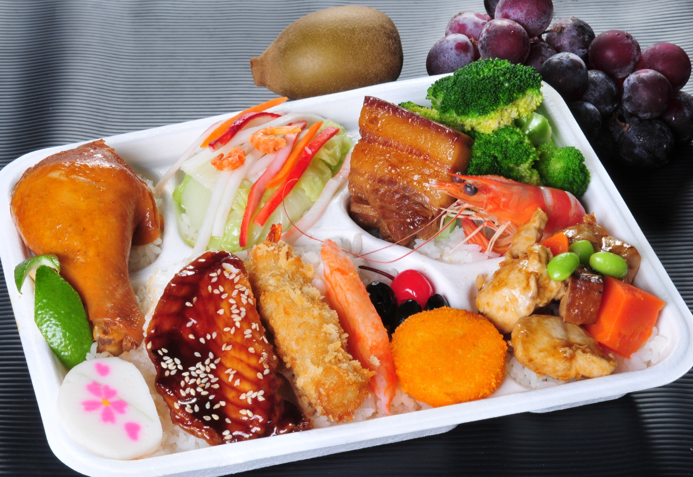
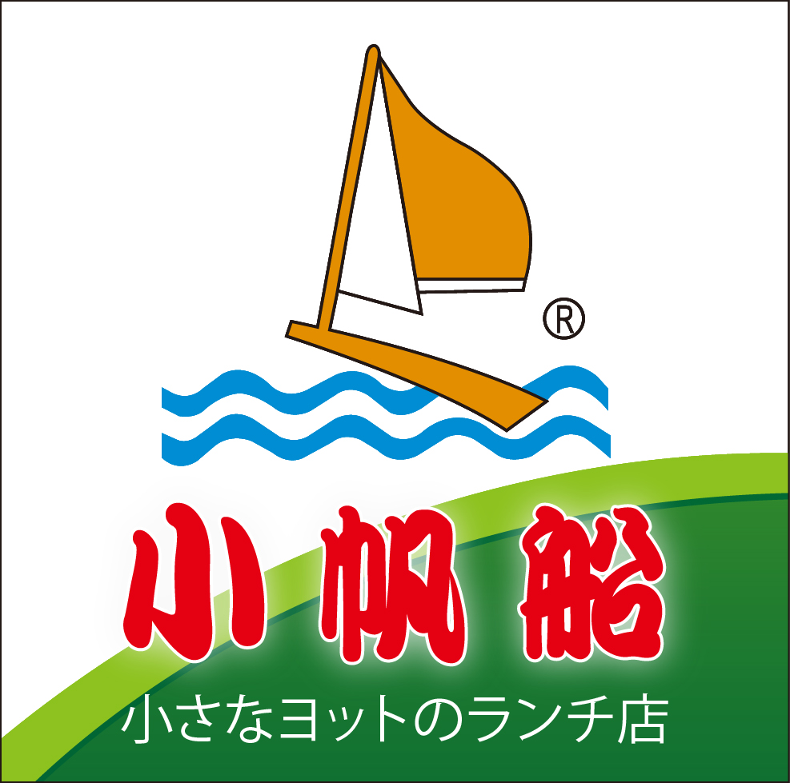

告訴我們場合
公司會議、學校活動、政府機關、展場或團體用餐。
高雄・企業會議・活動餐盒
為公司、學校、政府機關與活動團體準備精緻便當，依預算與需求搭配菜色，專人配送到場。

為團體訂餐而準備
公司會議、學校活動、政府機關、展場或團體用餐。
依人數、預算、葷素與需求建議合適菜色。
確認時間與地點後，由專人準備並配送到場。
代表性餐點
菜色會依季節、數量與預算安排；最新品項、價格與供應狀況，請以電話確認為準。
關於小帆船
小帆船專注中、日式便當與團體餐點，服務公司、學校、政府機關與活動場合。從菜色搭配、素食與水果需求，到配合單位付款規定，我們希望讓承辦人少一點費心。
「準時送達、份量清楚、每位用餐者都被照顧到。」
開始安排餐點
目前以電話洽詢最快。最低訂購數量、配送範圍與提前預訂時間，請一併來電確認。
